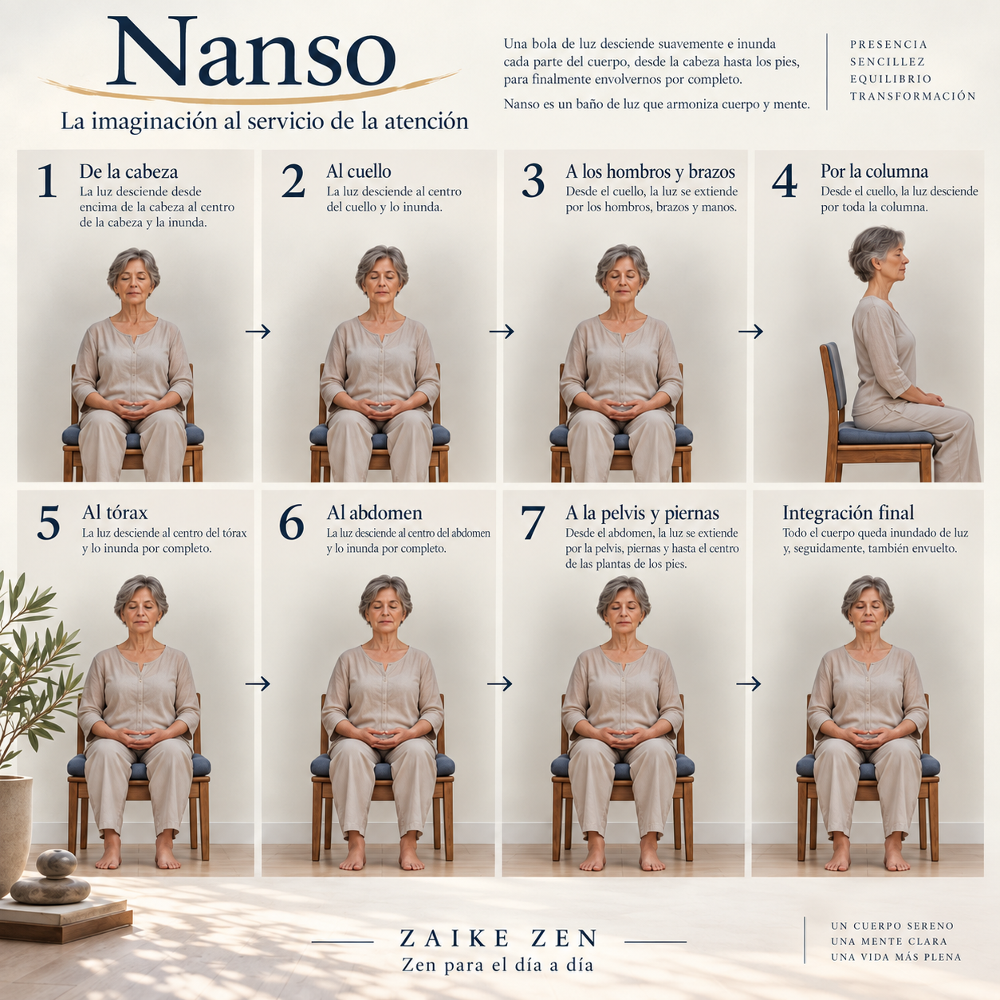
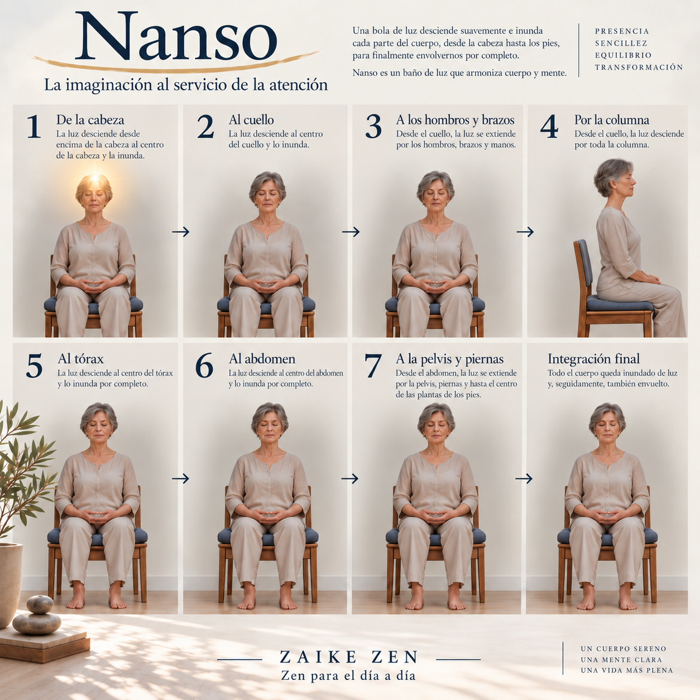
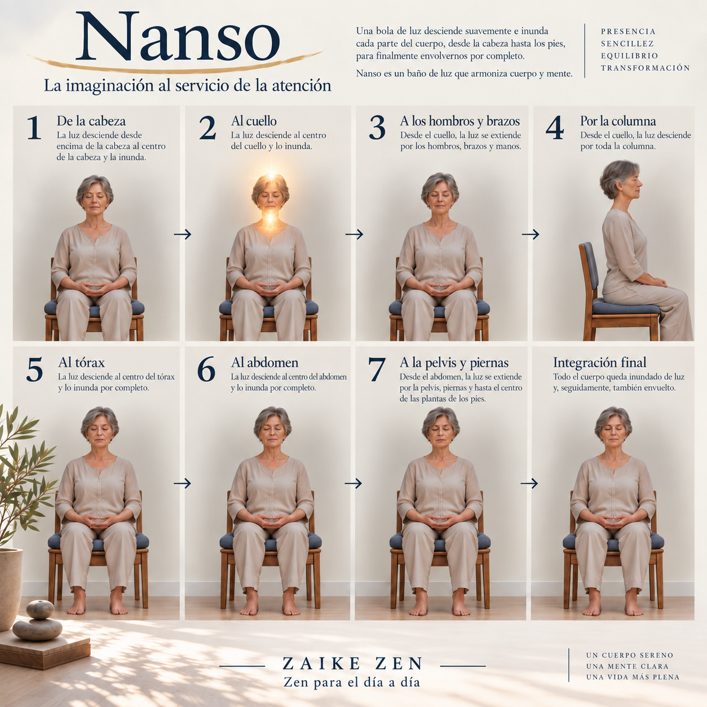
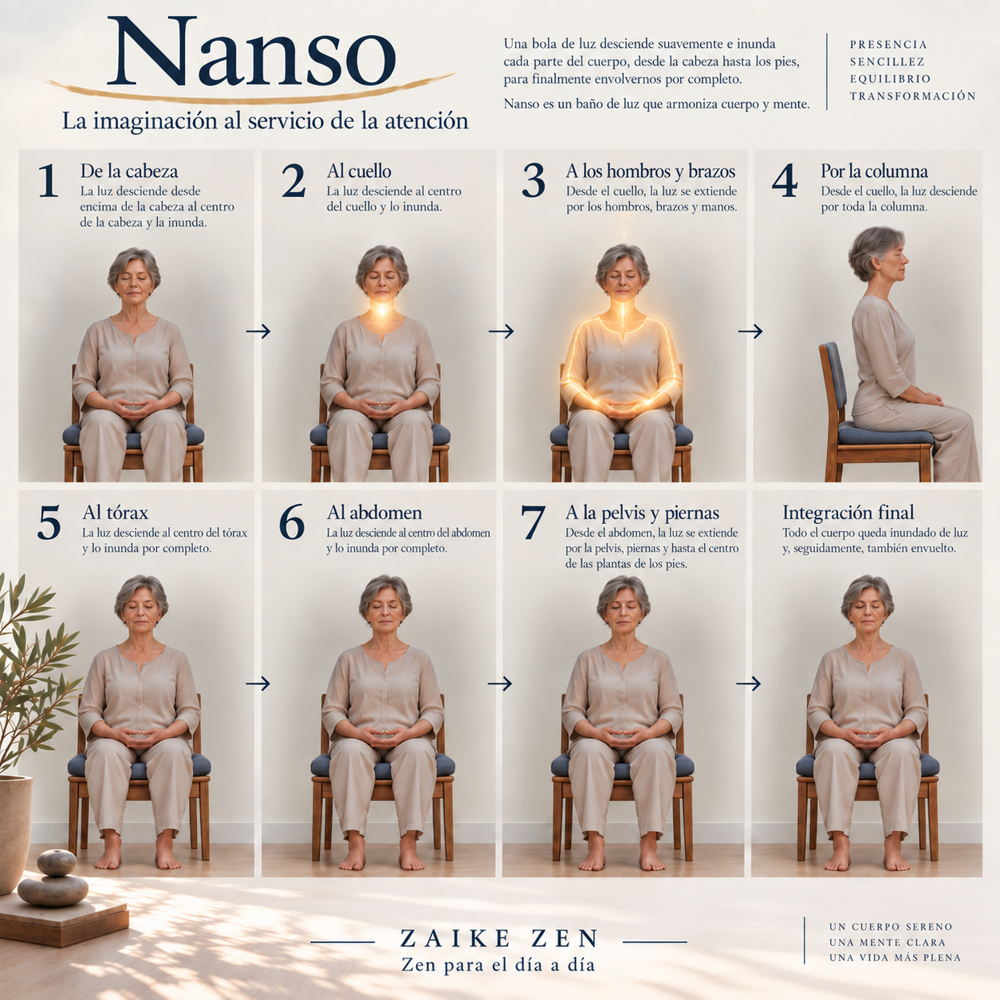
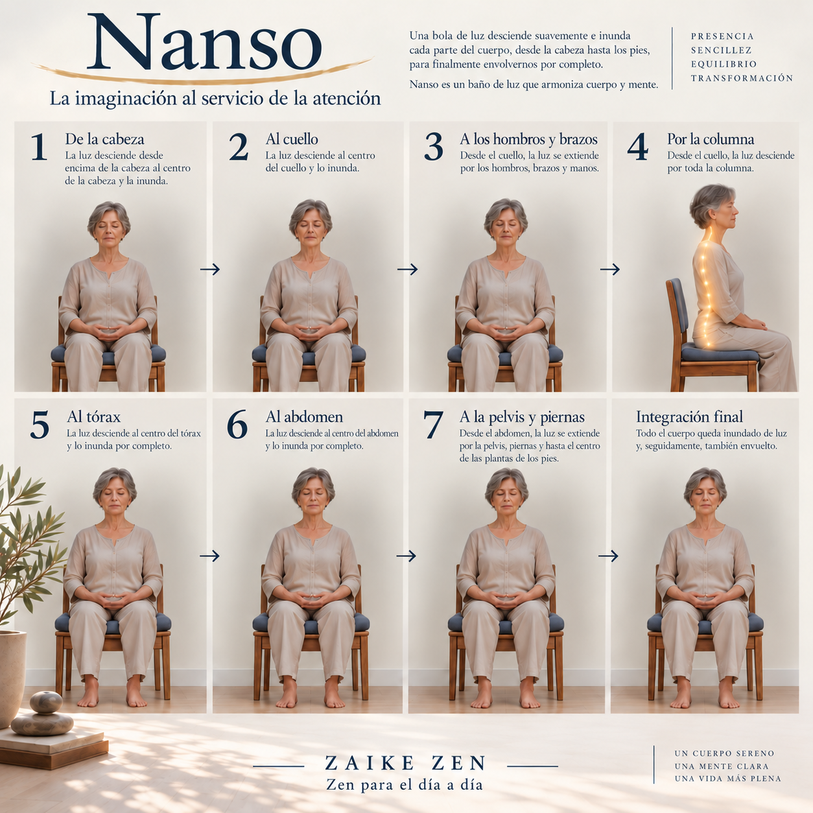
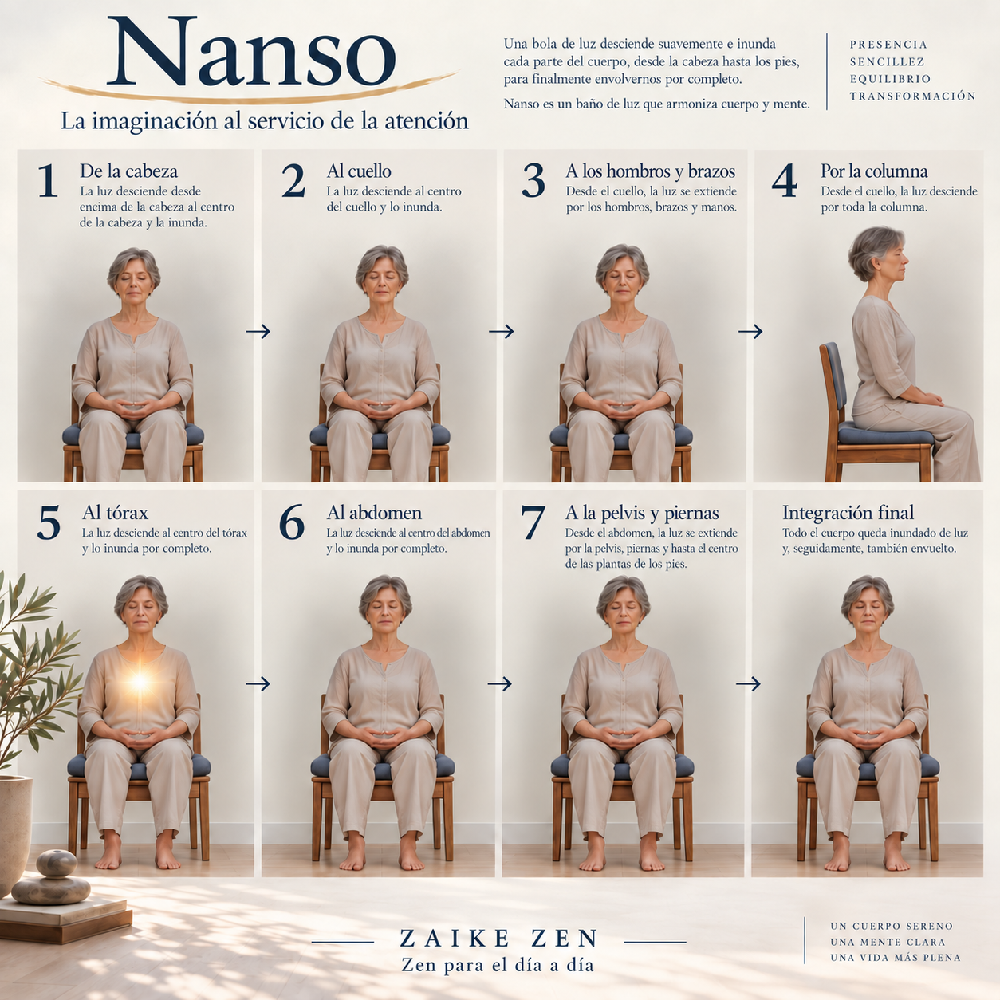
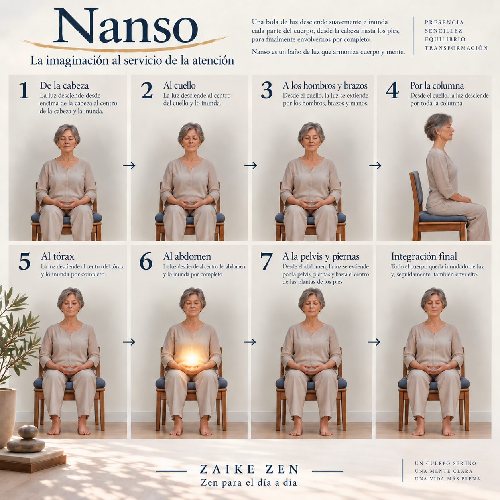
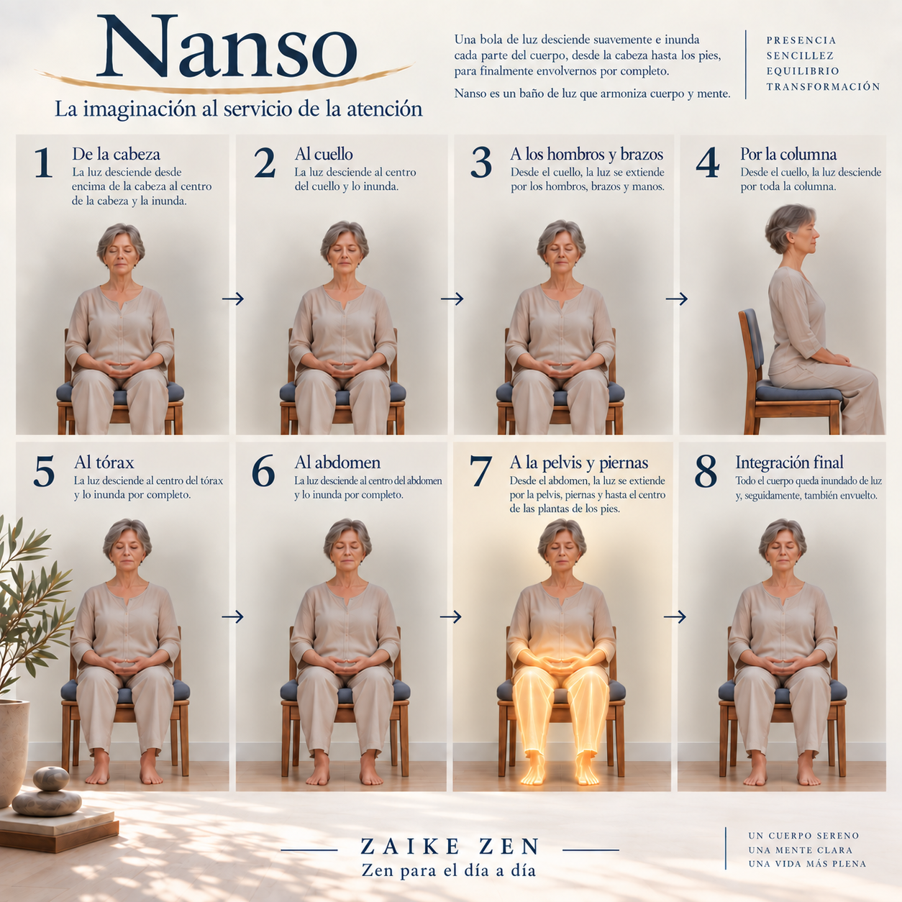
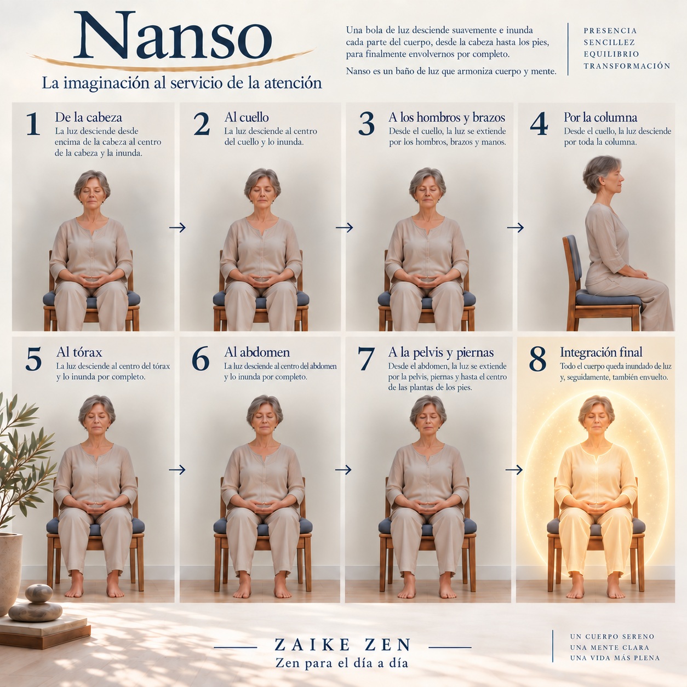

Nanso
La imaginación al servicio de la atención
La práctica
La práctica continúa incrementando la concentración sobre nuestro cuerpo a través de la imaginación. El Nanso es una práctica muy antigua que se utilizaba para potenciar nuestra propia capacidad de restablecernos a través de ejercicio de la respiración, la atención y la imaginación. En este caso el Nanso, además de favorecer nuestro bienestar, nos permite seguir adentrándonos en la unión del cuerpo y de la mente, constituyéndose así como un paso esencial de la meditación a través de la mirada interior.
Originalmente el Nanso era una sustancia medicinal de color blanco que se introducía imaginariamente en nuestro cuerpo desde la cabeza hasta los pies mediante sucesivos ciclos respiratorios. Hoy podemos imaginarla también como una bola de luz que, como un manantial entra hasta el centro de nuestra cabeza con la inhalación y, con la exhalación, la inunda extendiéndose por todos sus órganos, hasta que progresivamente la ocupa totalmente y la envuelve, dejando una sensación renovadora y revitalizante. Durante varios ciclos respiratorios esta sensación se hace más evidente hasta que, de forma espontánea, este manantial de luz entra con la inhalación hasta el centro de nuestro pecho y, con la exhalación, se extiendo por los órganos internos inundándolos de luz, haciéndolos brillar y dejando una sensación renovadora. Pulmones y corazón se limpian con este baño de luz, que va llegando a todos los rincones del tórax con las sucesivas respiraciones, hasta que todo el tronco se siente inundado y envuelto en luz renovadora y revitalizante.
Con la inspiración se extiende este manantial de luz desde la cabeza hasta el centro del abdomen y, con la exhalación, inunda los órganos internos hasta llenar completamente la cavidad abdominal, dejando una sensación revitalizante. Poco a poco todo el cuerpo de ve bañado por este manantial, desde la cabeza hasta la pelvis y las extremidades, llegando al centro de la planta de los pies. Todo nuestro cuerpo forma parte de este manantial de luz que nos atraviesa con la respiración, limpia y renueva nuestras células para dejarnos a su paso armonía y bienestar.
Ahora nuestra mente y nuestro cuerpo están íntimamente unidos, podríamos sentir que todo nuestro cuerpo está en la mente y que la mente está en cada parte de nuestro cuerpo. Nuestra atención está completamente saturada por las imágenes sentidas de nuestro cuerpo.
La relajación y la unión mente y cuerpo nos permitirán seguir adentrándonos en la práctica de la meditación casi sin darnos cuenta. La meditación se hace a partir de esta unión de cuerpo y mente, que absorbe nuestra atención concentrándola cada vez más.
Atención amorosa en el cuerpo









Práctica guiada
Puedes utilizar este audio para acompañar la práctica de Nanso.